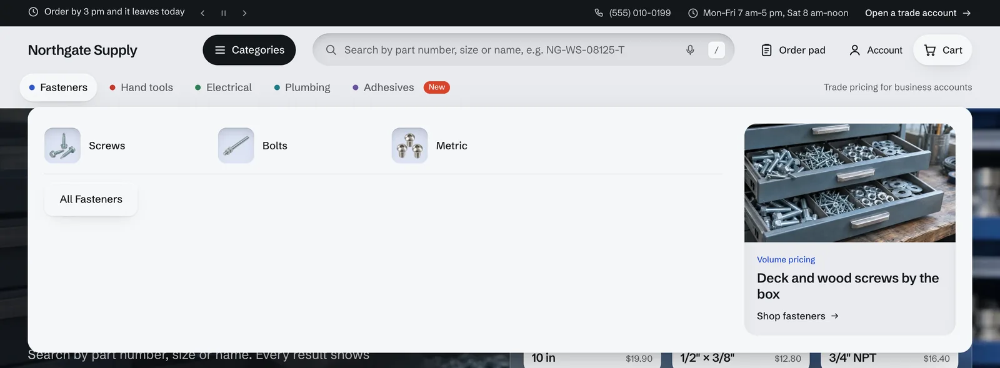

Store setup
Menus, header and footer
#The main menu
The header reads Main menu from ContentMenus.
- Top-level items become the category bar under the header.
- Items nested under them open the dropdown tray. A third level shows as links under each column.
- The same menu fills the Categories button and the phone menu.


#Category colors
Each top-level category can have a color dot in the bar and on its products:
- Add Category color blocks in the Header section, one per category, or
- set a
caliper.code_colorcolor metafield on the collection.
#Dropdown extras
- Dropdown promotion blocks add a picture card with a link to any dropdown.
- Menu badge blocks put a small colored label such as "New" on a menu link.
#Header settings
| Setting | What it does |
|---|---|
| Sticky header | Full keeps the whole header on screen; Compact keeps the logo, search and tools and lets the category bar slide away; Hide while scrolling down hides it until the buyer scrolls up. |
| Show Categories button | A button beside the search that opens every category with pictures and sub-categories. |
| Show order pad link and Order pad page | The Order pad link; it appears on its own when a page with the handle order-pad exists. |
| Saved items | Counts saved order pad lists, or shows My garage with the vehicles chosen in the vehicle finder. |
| Show bottom tab bar | On phones, a bar with home, categories, search, lists and cart. |
| Country and language picker | Compact with a flag beside the cart, or drop-downs in the category bar. |
| Show cart total beside the cart | Adds the cart amount to the cart link. |
#Utility bar
The thin strip above the header. Add up to four Message blocks (shipping, cutoff time, an offer) with an icon and link; with more than one, they take turns once the buyer starts using the page and can be paused. Add your phone number, opening hours and a link such as "Open a trade account". On phones only the messages show.
#Footer
Add blocks to the Footer section: Store info (logo or name, description, phone, email, address), Menu columns, Text and Email signup. Turn on payment icons, the country and language selectors and Follow on Shop in the section settings.
#Logo position
Header › Logo position on desktop puts the logo in the middle of the header with the search on the left. It is not used when the Categories button is on.
#Search panel
When a suggestion can be added to the cart straight from the panel, a quantity field at the bottom sets how many each add button adds. The empty panel offers recent searches, categories browsed lately, saved searches and your popular searches.